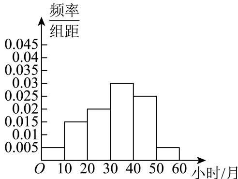
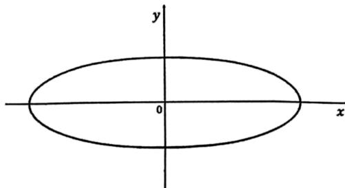

填空题 按本区原卷题号顺序排列。
嘉定 · 第1题 ★☆☆☆☆ · 教师预估 已知集合 A = { x ∣ − 1 < x ≤ 3 } A = \{ x | - 1 < x \leq 3 \} A = { x ∣ − 1 < x ≤ 3 } B = { x ∣ 1 ≤ x < 4 } B = \{ x | 1 \leq x < 4 \} B = { x ∣1 ≤ x < 4 } A ∩ B = A \cap B = A ∩ B =
嘉定 · 第2题 ★★☆☆☆ · 教师预估 本题资料或解析有待核事项，预览不可作为已审定成品。
不等 ↕ x − 2 x + 1 < \updownarrow \frac { x - 2 } { x + 1 } < ↕ x + 1 x − 2 <
嘉定 · 第3题 ★☆☆☆☆ · 教师预估 已知向量 m ⃗ = ( 1 , − 2 ) , n ⃗ = ( k , 4 ) \vec { m } = ( 1 , - 2 ) , \vec { n } = ( k , 4 ) m = ( 1 , − 2 ) , n = ( k , 4 ) ⋅ m → ⊥ n → , \cdot \overrightarrow { m } \perp \overrightarrow { n } , ⋅ m ⊥ n , k =
嘉定 · 第4题 ★★☆☆☆ · 教师预估 已知等比数列 { a n } \left\{ a _ { n } \right\} { a n } S n S _ { n } S n S 3 > S 4 S _ { 3 } > S _ { 4 } S 3 > S 4
嘉定 · 第5题 ★★☆☆☆ · 教师预估 本题资料或解析有待核事项，预览不可作为已审定成品。
在 ( 2 x − 1 x ) ℓ \left( 2 x - { \frac { 1 } { \sqrt { x } } } \right) ^ { \ell } ( 2 x − x 1 ) ℓ
嘉定 · 第6题 ★★☆☆☆ · 教师预估 已知θ ∈ R，若 tan θ + cot θ = 5 \tan \theta + \cot \theta = 5 tan θ + cot θ = 5
嘉定 · 第7题 ★★☆☆☆ · 教师预估 直线l: y = x + 1 y = x + 1 y = x + 1 C : x 2 + y 2 − 4 x − 2 y = 0 C { : } x ^ { 2 } + y ^ { 2 } - 4 x - 2 y = 0 C : x 2 + y 2 − 4 x − 2 y = 0
嘉定 · 第8题 ★★☆☆☆ · 教师预估 已知复数z1 ，z2 满足 ∣ z 1 ∣ = 1 | z _ { 1 } | = 1 ∣ z 1 ∣ = 1 ∣ z 2 ∣ = 2 , ∣ z 1 − z 2 ∣ = 7 | z _ { 2 } | = 2 \ , \ | z _ { 1 } - z _ { 2 } | = \sqrt { 7 } ∣ z 2 ∣ = 2 , ∣ z 1 − z 2 ∣ = 7 ∣ z 1 + z 2 ∣ | z _ { 1 } + z _ { 2 } | ∣ z 1 + z 2 ∣
嘉定 · 第9题 ★★☆☆☆ · 教师预估 在由1，2，3，4，5这五个数组成的无重复数字的四位数中，其能被3整除的概率为
嘉定 · 第10题 ★★☆☆☆ · 教师预估 已知某次数学的测试成绩X服从 μ = 75 , σ 2 = 64 \textstyle \mu = 7 5 , \sigma ^ { 2 } = 6 4 μ = 75 , σ 2 = 64 P ( μ − σ < X < μ + σ ) ≈ 0.6827 P(\mu-\sigma<X<\mu+\sigma)\approx0.6827 P ( μ − σ < X < μ + σ ) ≈ 0.6827 P ( μ − 2 σ < X < μ + 2 σ ) ≈ 0.9545 P(\mu-2\sigma<X<\mu+2\sigma)\approx0.9545 P ( μ − 2 σ < X < μ + 2 σ ) ≈ 0.9545 P ( μ − 3 σ < X < μ + 3 σ ) ≈ 0.9973 P(\mu-3\sigma<X<\mu+3\sigma)\approx0.9973 P ( μ − 3 σ < X < μ + 3 σ ) ≈ 0.9973
嘉定 · 第11题 ★★★★☆ · 教师预估 本题资料或解析有待核事项，预览不可作为已审定成品。
某建筑公司欲设计一个正四棱锥形纪念碑，要求其顶点位于容积为36π立方米的球形景观灯所在球面上．考虑到抗风、抗震等结构安全需求，侧棱长度l需满足 ± 2 3 ≤ l ≤ 3 3 . \pm 2 { \sqrt { 3 } } \leq l \leq 3 { \sqrt { 3 } } . ± 2 3 ≤ l ≤ 3 3 .
嘉定 · 第12题 ★★★☆☆ · 教师预估 本题资料或解析有待核事项，预览不可作为已审定成品。
在平面直角坐标系中，一质点 P P P O O O O O O P 1 P_1 P 1 P 1 P_1 P 1 P 2 P_2 P 2 k k k P k − 1 P_{k-1} P k − 1 P 0 = O P_0=O P 0 = O P k P_k P k v ⃗ k = P k − 1 P k → \vec v_k=\overrightarrow{P_{k-1}P_k} v k = P k − 1 P k k k k x x x ( 90 k ) ∘ (90k)^\circ ( 90 k ) ∘ S ⃗ n \vec S_n S n n n n S ⃗ n = O P n → \vec S_n=\overrightarrow{OP_n} S n = O P n ∣ S ⃗ n ∣ = 85 |\vec S_n|=\sqrt{85} ∣ S n ∣ = 85 n n n
选择题 按本区原卷题号顺序排列。
嘉定 · 第13题 ★★★☆☆ · 教师预估 本题资料或解析有待核事项，预览不可作为已审定成品。
已知实数 a , b a,b a , b a > b a>b a > b
A. a 3 > b 3 a^3>b^3 a 3 > b 3
B. a b > 1 \dfrac ab>1 b a > 1
C. a 2 + b 2 > 2 a b a^2+b^2>2ab a 2 + b 2 > 2 ab
D. 2 a > 2 b 2^a>2^b 2 a > 2 b
嘉定 · 第14题 ★★☆☆☆ · 教师预估 已知平面α和平面 ; β , { \mathrm { ~ ~ } } ; { \boldsymbol { \beta } } , ; β , m ⊂ α m \subset \alpha m ⊂ α n ⊂ β , n \subset \beta , n ⊂ β ,
A. 若 ρ ˙ m / / n , \dot { \mathbf { \rho } } _ { m } / / n , ρ ˙ m // n , ∣ α / / β | \alpha / / \beta ∣ α // β
B. 若 m ˙ ‾ ˙ \dot { \overline { { { \dot { m } } } } } m ˙ ˙ α / / β \alpha / / \beta α // β
C. ♯ m ⊥ n \sharp m \perp n ♯ m ⊥ n ∣ α ⊥ β | \alpha \perp \beta ∣ α ⊥ β
D. 若 n ⊥ α . n \bot \alpha . n ⊥ α . m ⊥ n m \perp n m ⊥ n
嘉定 · 第15题 ★★★☆☆ · 教师预估 已知关于x的不等式 ∣ sin 2 x ∣ > cos | \sin 2 x | > \cos ∣ sin 2 x ∣ > cos [ 0 , 2 π ] [ 0 , 2 \pi ] [ 0 , 2 π ]
A. 3
B. 4
C. 5
D. 6
嘉定 · 第16题 ★★★★☆ · 教师预估 设数列 { a n } \left\{ a _ { n } \right\} { a n } a n = sin ( n π 3 ) + ( − 1 ) n cos ( n π 4 ) a _ { n } = \sin \left( { \frac { n \pi } { 3 } } \right) + ( - 1 ) ^ { n } \cos \left( { \frac { n \pi } { 4 } } \right) a n = sin ( 3 nπ ) + ( − 1 ) n cos ( 4 nπ ) S n S _ { n } S n T n T _ { n } T n
A. 数列 { S n } \{ S _ { n } \} { S n } { T n } \left\{ T _ { n } \right\} { T n }
B. 数列 { S n } \{ S _ { n } \} { S n } { T n } \left\{ T _ { n } \right\} { T n }
C. 数列 { S n } \{ S _ { n } \} { S n } { T n } \left\{ T _ { n } \right\} { T n }
D. 数列 { S n } \{ S _ { n } \} { S n } { T n } \left\{ T _ { n } \right\} { T n }
解答题 按本区原卷题号顺序排列。
嘉定 · 第17题 ★★★☆☆ · 教师预估 如图，在四棱锥 P − A B C D ! P - A B C D ! P − A BC D ! P A = A C = 2 , B C = 1 P A = A C = 2 , B C = 1 P A = A C = 2 , BC = 1 A B = 3 . A B = { \sqrt { 3 } } . A B = 3 . A D / / − ˉ ˉ \mathrm { A D } / / \bar { \bar { - } } AD // − ˉ ˉ A D ⊥ P B A D \bot P B A D ⊥ PB
嘉定 · 第18题 ★★★★☆ · 教师预估 已知函数 y = f ( x ) \mathbf { \boldsymbol { y } } = \mathbf { \boldsymbol { f } } \left( \boldsymbol { x } \right) y = f ( x ) f ( x ) = a ⋅ e x + b ⋅ e − x f \left( x \right) = a \cdot \mathbf { e } ^ { x } + b \cdot \mathbf { e } ^ { - x } f ( x ) = a ⋅ e x + b ⋅ e − x a b ≠ 0 \boldsymbol a \boldsymbol b \neq 0 a b = 0 y = f ( x ) y = f \left( x \right) y = f ( x ) g ( x ) = e x − x g \left( x \right) = \mathbf { e } ^ { x } - x g ( x ) = e x − x f ( x ) ≥ g ( x ) f \left( x \right) \geq g \left( x \right) f ( x ) ≥ g ( x )
嘉定 · 第19题 ★★★☆☆ · 教师预估 某学校对学生的课外阅读时间进行调查，随机抽取了150位学生，得到如下样本数据频率分布直方图

嘉定 · 第20题 ★★★★☆ · 教师预估 本题资料或解析有待核事项，预览不可作为已审定成品。
已知椭圆C： x 2 9 + y 2 = 1 { \frac { x ^ { 2 } } { 9 } } + y ^ { 2 } = 1 9 x 2 + y 2 = 1 P ( 3 , 0 ) P \left( 3 , 0 \right) P ( 3 , 0 ) ⋮ l 1 \vdots l _ { 1 } ⋮ l 1 − ♯ Q - \sharp { \sf Q } − ♯ Q

1 的斜率为1时，求 △ P Q M \triangle P Q M △ PQM ⟨ l 2 : x = − 3 \mathbf { \langle } l _ { 2 } : x = - 3 ⟨ l 2 : x = − 3 i 2 \mathrm { i } _ { 2 } i 2 嘉定 · 第21题 ★★★★★ · 教师预估 已知函数 y = f ( x ) \mathbf { \boldsymbol { y } } = \mathbf { \boldsymbol { f } } \left( \boldsymbol { x } \right) y = f ( x ) f ( x ) = x 2 + a x + b , ( a , b ∈ R ) f \left( x \right) = x ^ { 2 } + a x + b , \left( a , b \in \mathbf { R } \right) f ( x ) = x 2 + a x + b , ( a , b ∈ R ) S ( f ) = { ( x , y ) ∣ y = f ( x ) , x ∈ R } S \left( f \right) = \left\{ ( x , y ) | y = f ( x ) , x \in \mathbf { R } \right\} S ( f ) = { ( x , y ) ∣ y = f ( x ) , x ∈ R } P ( p , q ) P ( p , q ) P ( p , q ) D ( P ) = { ( x , y ) ∣ ∣ x − p ∣ ≤ 1 , ( x , y ) ∈ S ( f ) } D ( P ) = \{ ( x , y ) | | x - p | \leq 1 , ( x , y ) \in S ( f ) \} D ( P ) = {( x , y ) ∣∣ x − p ∣ ≤ 1 , ( x , y ) ∈ S ( f )} ( x , y ) ∈ D ( P ) ( x , y ) \in D ( P ) ( x , y ) ∈ D ( P ) ∣ y − q ∣ ≤ 1 | y - q | \leq 1 ∣ y − q ∣ ≤ 1